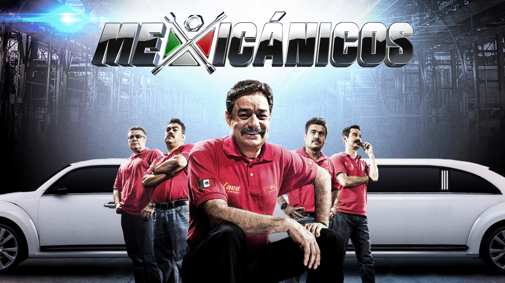

About Us
¡Bienvenido a Mechanics Garage!
En Mechanics Garage, nos enorgullece ser mucho más que un simple taller mecánico. Somos un equipo apasionado de expertos en automóviles comprometidos con brindar servicios excepcionales y soluciones innovadoras para mantener tu vehículo en su mejor forma.
Con 35 años de experiencia en la industria automotriz, hemos crecido y evolucionado para convertirnos en un referente en el cuidado y mantenimiento de vehículos. Desde nuestros humildes comienzos, hemos invertido en tecnología de vanguardia y en el desarrollo constante de las habilidades de nuestro talentoso equipo.
En Mechanics Garage, nuestra misión es proporcionar a nuestros clientes un servicio confiable y de calidad que supere sus expectativas. Nos esforzamos por ser el socio de confianza de cada propietario de automóviles, brindando soluciones personalizadas y garantizando la seguridad y el rendimiento óptimo de cada vehículo.
Contamos con un equipo altamente calificado de técnicos y mecánicos que comparten una pasión común por los automóviles. Nuestros profesionales no solo tienen la experiencia técnica necesaria, sino también el compromiso de mantenerse actualizados con las últimas tendencias y tecnologías en la industria automotriz.
Desde reparaciones especializadas hasta mantenimiento preventivo y diagnósticos precisos, ofrecemos una amplia gama de servicios diseñados para mantener tu vehículo en condiciones óptimas. Nos enorgullece la eficiencia y la precisión con la que abordamos cada tarea, brindando soluciones que prolongan la vida útil de tu automóvil.
En Mechanics Garage, nos preocupamos por el medio ambiente. Implementamos prácticas ecológicas siempre que sea posible y promovemos el reciclaje responsable de materiales. Buscamos minimizar nuestro impacto ambiental y fomentar un enfoque sostenible en todos nuestros procesos.
En Mechanics Garage, valoramos las relaciones a largo plazo con nuestros clientes. Estamos aquí para escucharte, responder a tus preguntas y proporcionarte la atención personalizada que mereces. No solo somos un taller mecánico, somos tu socio en el cuidado de tu vehículo.
Gracias por considerar a Mechanics Garage como tu elección de confianza. Estamos ansiosos por servirte y asegurarnos de que tu experiencia con nosotros sea excepcional en cada paso del camino. ¡Confía en nosotros para cuidar de tu automóvil como si fuera nuestro propio tesoro sobre ruedas!
